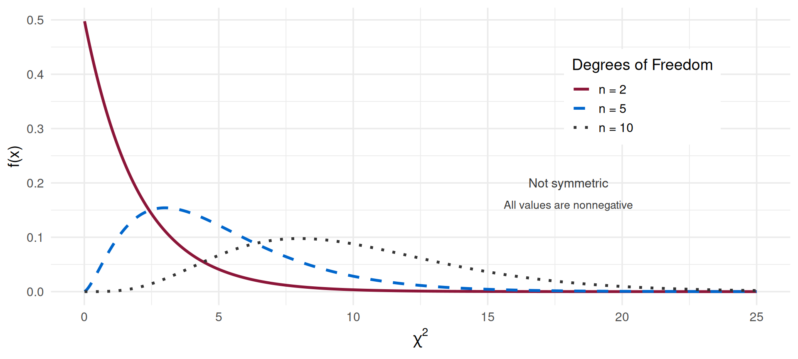
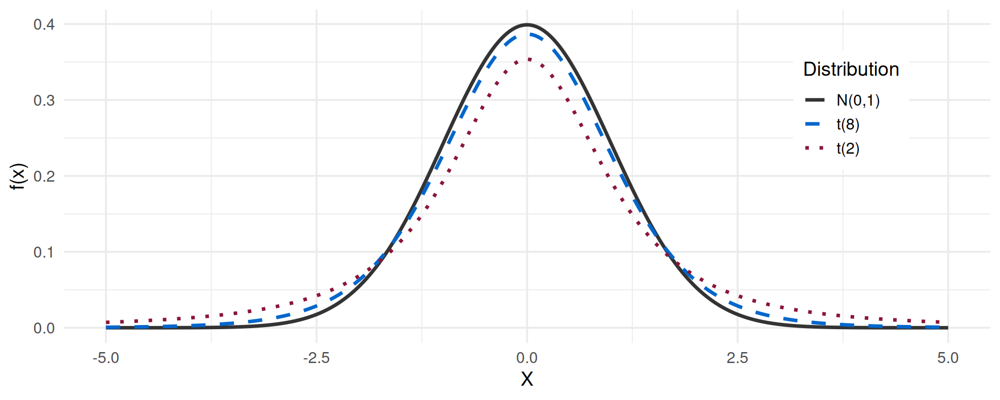

Sampling Distributions
Sampling Distributions
Random (Casual) Sample and Statistic
Population
- Parameters (unknown)
Sample
- Statistics (known)
Statistical Inference
. . .
Statistical inference consists of a set of methods that allow us to draw conclusions about a population, based on a random (or casual) sample drawn from that population.
Random Sample, Parameters, and Statistics
A sample of size \(n\), drawn from a population according to a random (or casual) process, is called a random sample if the values of the random variables \(X_1, X_2, \ldots, X_n\) are independent and identically distributed. The term \(X_1\) denotes the first element of the sample, \(X_2\) the second, and \(X_n\) the \(n\)-th.
. . .
Parameters and Statistics
A parameter is a value that characterizes a given population which, although unknown, is fixed.
. . .
A statistic is a characteristic that is a function of the sample values, i.e., it is a random variable that does not involve any unknown parameter, denoted by \(T(X_1, X_2, \ldots, X_n)\).
Statistics and Estimates
Once a particular sample \(x_1, x_2, \ldots, x_n\) has been observed, it is possible to obtain the value of the statistic associated with this sample, namely \(T(x_1, x_2, \ldots, x_n)\), yielding an estimate for the parameter.
. . .
From each random sample drawn from a population, statistics with different values can be obtained.
. . .
Statistics are random variables, and therefore their probabilistic behavior is given by their respective distribution function (density or probability function), leading to the sampling distributions of the statistic represented by \(T(X_1, X_2, \ldots, X_n)\).
Exercise I
Consider \(X_1, X_2, \ldots, X_n\), \(n \in \mathbb{N}\), a random sample from a \(Normal(\mu = -2, \sigma)\) population, where \(\sigma\) is unknown. The following r.v.’s are not statistics:
[T] [F] F \(\quad T(X_1, X_2, \ldots, X_n) = X_1 + X_2 + \cdots + X_n\)
[T] [F] F \(\quad T(X_1, X_2, \ldots, X_n) = \bar{X}\)
[T] [F] T \(\quad T(X_1, X_2, \ldots, X_n) = \dfrac{\bar{X}}{\sigma}\)
[T] [F] F \(\quad T(X_1, X_2, \ldots, X_n) = \displaystyle\frac{\sum \left(X_i - \mu\right)^2}{n}\)
[T] [F] F \(\quad T(X_1, X_2, \ldots, X_n) = \dfrac{\sum (X_i - \bar{X})^2}{n-1}\)
[T] [F] T \(\quad T(X_1, X_2, \ldots, X_n) = \displaystyle\sum \left(\dfrac{X_i - \mu}{\sigma}\right)^2\)
Exercise II
Let \(X_1, X_2, \ldots, X_n\), \(n \in \mathbb{N}\), be a random sample from a population \(X\) (with unknown probabilistic behavior), with expected value \(\mu\) and variance \(\sigma^2\), both known.
- The expected value of the statistics \(\displaystyle\sum_{i=1}^{n} X_i\) and \(\bar{X}\) are, respectively, equal to:
a)\(n\mu\) and \(\mu\) \(\quad\) b) \(n\mu\) and \(\mu/n\) \(\quad\) c) \(\mu\) and \(\mu/n\) \(\quad\) d) none of the above
. . .
Answer: (a)
- The variance of the statistics \(\displaystyle\sum_{i=1}^{n} X_i\) and \(\bar{X}\) are, respectively, equal to:
- \(n\sigma^2\) and \(\sigma\) \(\quad\) b)\(n\sigma^2\) and \(\sigma^2/n\) \(\quad\) c) \(\sigma^2\) and \(\sigma^2/n\) \(\quad\) d) none of the above
. . .
Answer: (b)
Chi-Square Distribution
A pertinent question arises: How to obtain the sampling distribution of a statistic or of a random variable?
. . .
Before answering this question, it is important to introduce two fundamental theoretical distributions within the scope of inference.
. . .
Chi-Square Distribution
Let \(Z_1, Z_2, \ldots, Z_n\) be independent and identically distributed random variables, \(Z_i \sim Normal(0, 1)\).
\[Y = \sum_{i=1}^{n} Z_i^2 = \sum_{i=1}^{n}\left(\frac{X_i - \mu}{\sigma}\right)^2\]
is a Chi-square random variable with \(n\) degrees of freedom, i.e.: \(Y \sim \chi^2_{(n)}\).
Chi-Square Distribution: Main Properties (1)
Chi-Square Distribution: Main Properties (2)
The graphical shape of the distribution depends on its degrees of freedom: \(n\) (\(n \in \mathbb{N}\)).
It is a positive and non-symmetric function. The skewness decreases as the degrees of freedom increase.
If \(X \sim \chi^2_{(n)}\), then: \(E(X) = n\) and \(Var(X) = 2n\).
It is an additive distribution. The sum of \(k\) independent random variables, where \(X_i \sim \chi^2_{(n_i)}\), is still a random variable such that: \[\sum_{i=1}^k X_i \sim \chi^2_{\left(n = \sum_{i=1}^k n_i\right)}\]
. . .
- With increasing degrees of freedom, the Chi-square distribution tends to the Normal distribution, by the C.L.T.:
\[\chi^2_{(n)} \;\overset{\text{CLT}}{\dot\sim}\; N(n,\;\sqrt{2n}) \iff Z_n = \frac{\chi^2_{(n)} - n}{\sqrt{2n}} \;\overset{\text{CLT}}{\dot\sim}\; N(0, 1)\]
Exercise V
Let \((Z_1, Z_2, Z_3, Z_4, Z_5)\) be a random sample from a \(N(0, 1)\) population and \(Q = \sum_{i=1}^5 Z_i^2\).
[V][F] \(\quad P(1.610 < Q < 9.236) = 0.8\)
[V][F] \(\quad\) The standard deviation of \(Z_3^2 + Z_4^2\) is equal to 4.
. . .
a)
\(Q \sim \chi^2_{(5)}\)
\[P(1.610 < Q < 9.236) = P(Q > 1.610) - P(Q > 9.236) = 0.9 - 0.1 = 0.8\]
(direct observation from the \(\chi^2\) table)
The statement is true.
. . .
b)
\(Z_3^2 \sim \chi^2_{(1)}\) ; \(Z_4^2 \sim \chi^2_{(1)}\) ; \(Z_3^2 + Z_4^2 \sim \chi^2_{(2)}\) (Additivity Theorem)
\[Var(Z_3^2 + Z_4^2) = 2 \times 2 = 4 \implies \sigma(Z_3^2 + Z_4^2) = \sqrt{4} = 2\]
The statement is false.
Student’s t Distribution
Let \(X \sim Normal(0, 1)\) and \(Y \sim \chi^2_{(n)}\) be independent random variables. Then the random variable:
\[T = \frac{X}{\sqrt{Y/n}} \sim t_{(n)}\]
has a Student’s \(t\) distribution with \(n\) degrees of freedom, i.e.: \(T \sim t_{(n)}\).
. . .
Main properties of the Student’s t distribution
- The graphical shape depends on its degrees of freedom (\(n\)). As the d.f. increase, the quantiles of the Student’s \(t\) converge to the corresponding quantiles of the Standard Normal.
Student’s t Distribution: Properties

It is a symmetric function around the mean.
If \(X \sim t_{(n)}\), then: \(E(X) = 0\) and \(Var(X) = \dfrac{n}{n-2}\), with \(n > 2\).
Student’s t Distribution: CLT Approximation
- With increasing degrees of freedom, the Student’s \(t\) distribution tends to the Normal distribution, by the C.L.T.:
\[X \;\overset{\text{CLT}}{\dot\sim}\; N\left(0, \;\frac{n}{n-2}\right) \iff Z_n = \frac{X}{\sqrt{\frac{n}{n-2}}} \;\overset{\text{CLT}}{\dot\sim}\; N(0, 1)\]
Example
Exercise 4: Let \(T\) be a r.v distributed \(t-Student\) with 11 d.o.f., \(T\sim t(11)\).
i) [T][F] The value of \(k\) such that \(P(T\leq k)=0.75\) is equal to \(0.303\). ii) [T][F] The value of the probability \(P(|T|>2.201)\) is:
a) 0.025 b) 0.95 c) 0.05 d) None
. . .
- \(P(T\leq k)=0.75\ \Leftrightarrow\ P(T>k)=0.25\ \Leftrightarrow\ k=0.697\) directly from the table, and the the sentence is False.
- \(P(|T|>2.201)=2 P(T>2.201) = 2\times 0.025 = 0.05\) by symmetry of the distribution and direct observation of the table. The correct answer is c.
Sampling Distributions of the Sample Mean \(\bar{X}\)
Case 1: Normal Population, \(\sigma^2\) Known
Population: \(X \sim N(\mu, \sigma)\), with \(\sigma^2\) known.
From a random sample \(X_1, X_2, \ldots, X_n\), where \(X_i \sim N(\mu, \sigma)\), we obtain the statistic sample mean:
\[\bar{X} = \frac{1}{n}\sum_{i=1}^n X_i\]
. . .
The sampling distribution of \(\bar{X}\) is still Normal, by the additivity theorem of the Normal distribution:
\[\bar{X} \sim N\left(\mu, \;\frac{\sigma}{\sqrt{n}}\right) \iff Z = \frac{\bar{X} - \mu}{\dfrac{\sigma}{\sqrt{n}}} \sim N(0, 1)\]
Case 2: Normal Population, \(\sigma^2\) Unknown
Population: \(X \sim N(\mu, \sigma)\), with \(\sigma^2\) unknown.
Statistic: Mean of a random sample of size \(n\): \(\bar{X} = \dfrac{1}{n}\displaystyle\sum_{i=1}^n X_i\)
. . .
Sampling distribution of \(\bar{X}\):
\[T = \frac{\bar{X} - \mu}{\dfrac{S}{\sqrt{n-1}}} = \frac{\bar{X} - \mu}{\dfrac{S'}{\sqrt{n}}} \sim t_{(n-1)}\]
. . .
Note: It is rare that one needs to infer the mean value when the variance is known. Thus, it is necessary to estimate the parameter \(\sigma^2\) using the sample variance \(S^2\) or the corrected sample variance \(S'^2\).
Case 2 (cont.) and Case 3
\[S^2 = \frac{1}{n}\sum_{i=1}^n (X_i - \bar{X})^2 \qquad \text{and} \qquad S'^2 = \frac{1}{n-1}\sum_{i=1}^n (X_i - \bar{X})^2 = \frac{n}{n-1}S^2\]
. . .
Approximate sampling distribution of \(\bar{X}\): for \(n\) sufficiently large (\(n \geq 30\)), by the C.L.T.:
\[Z = \frac{\bar{X} - \mu}{\dfrac{S}{\sqrt{n-1}}} = \frac{\bar{X} - \mu}{\dfrac{S'}{\sqrt{n}}} \;\overset{\text{CLT}}{\dot\sim}\; N(0, 1)\]
. . .
Case 3: Unknown population, with mean \(\mu\) and known variance \(\sigma^2\).
Statistic: Mean of a random sample of size \(n\) (\(n \geq 30\)): \(\bar{X} = \dfrac{1}{n}\displaystyle\sum_{i=1}^n X_i\)
Case 3 (cont.)
Approximate sampling distribution of \(\bar{X}\): by the C.L.T.,
\[Z = \frac{\bar{X} - \mu}{\dfrac{\sigma}{\sqrt{n}}} \;\overset{\text{CLT}}{\dot\sim}\; N(0, 1)\]
. . .
Note: If \(\sigma^2\) is unknown, we have the approximate sampling distribution:
\[Z = \frac{\bar{X} - \mu}{\dfrac{S}{\sqrt{n-1}}} = \frac{\bar{X} - \mu}{\dfrac{S'}{\sqrt{n}}} \;\overset{\text{CLT}}{\dot\sim}\; N(0, 1)\]
Exercise VII
A certain company intends to validate the value (in euros) of its accounts receivable from clients, with an underlying distributional behavior of the account values being \(Normal(\mu = 385, \sigma = ?)\). A random sample of 25 client accounts (independent) was selected, yielding a corrected sample standard deviation of \(s' = 122.6\) euros.
. . .
- V F \(\quad\) The sampling distribution of the mean value of client accounts is \(t_{(25)}\).
. . .
- V F \(\quad\) The sample size to be collected (assuming the corrected sample standard deviation remains the same) so that the sample mean does not deviate from the population mean by more than 20 euros in 90% of cases is \(n = 102\). (Assume, for the calculations, that the value of \(n\) to be found will be greater than 30.)
Exercise VII — Solution: a)
Population: \(X \sim Normal(\mu = 385, \sigma = ?)\) (standard deviation unknown)
Sample: \(n = 25 \rightarrow s' = 122.6\)
. . .
a)
The sampling distribution of the statistic sample mean (mean value of client accounts) is given by:
\[T = \frac{\bar{X} - \mu}{\dfrac{s'}{\sqrt{n}}} \sim t_{(n-1)} \equiv \frac{\bar{X} - \mu}{\dfrac{s'}{\sqrt{n}}} \sim t_{(24)}\]
The statement is false.
Exercise VII — Solution: b)
b)
Population: \(X \sim Normal(\mu = 385, \sigma = ?)\) (standard deviation unknown)
Sample: \(n \geq 30 \rightarrow s' = 122.6\)
. . .
\[\bar{X} \;\overset{\text{CLT}}{\dot\sim}\; N\left(\mu, \;\frac{s'}{\sqrt{n}}\right) \equiv N\left(385, \;\frac{122.6}{\sqrt{n}}\right)\]
. . .
\[P(|\bar{X} - \mu| < 20) = 0.9 \iff P\left(|Z| < \frac{20}{\dfrac{122.6}{\sqrt{n}}}\right) = 0.9\]
. . .
\[\iff P\left(|Z| > \frac{20}{\dfrac{122.6}{\sqrt{n}}}\right) = 0.1\]
. . .
\[\iff \frac{20}{\dfrac{122.6}{\sqrt{n}}} = 1.645 \iff n \geq 102\]
The statement is true.
Sampling Distributions of the Sample Variance \(S^2\)
Sampling Distribution of \(S^2\)
Population: \(X \sim N(\mu, \sigma)\), with mean \(\mu\) unknown and variance \(\sigma^2\).
Selected a random sample \(X_1, X_2, \ldots, X_n\), where \(X_i \sim N(\mu, \sigma)\), we obtain the statistic sample variance \(S^2\) or corrected sample variance \(S'^2\):
. . .
Sampling distribution of \(S^2\) or \(S'^2\):
\[Q = \frac{(n-1)S'^2}{\sigma^2} = \frac{nS^2}{\sigma^2} \sim \chi^2_{(n-1)}\]
Exercise VIII
A pharmaceutical company produces pills in which the variability of the quantity of the active substance from one pill to another should be very small. The standard deviation of the population is, supposedly, one milligram. Inspectors from the Ministry of Health selected a random sample of 16 pills. Assuming the population is Normal, the probability that the corrected sample variance is greater than \(0.736\;mg^2\) is equal to:
- 0.76 \(\qquad\) b) 0.25 \(\qquad\) c) 0.75 \(\qquad\) d) none of the above
. . .
Population: \(X \sim N(\mu, \sigma)\)
Pivotal variable:
\[Q = \frac{(n-1)S'^2}{\sigma^2} = \frac{(n-1)S'^2}{1} = (n-1)S'^2 \sim \chi^2_{(n-1)} \equiv \chi^2_{(15)}\]
. . .
We want:
\[P(S'^2 > 0.736) = P(Q > 15 \times 0.736) = P(Q > 11.04) \approx 0.75\]
(direct observation from the \(\chi^2\) distribution table)
The correct answer is c).
Sampling Distributions of the Proportion from a Bernoulli Population
Case 1: Total of Successes
Selected a random sample \(X_1, X_2, \ldots, X_n\) from a Bernoulli population, where \(X_i \sim Bernoulli(1, p)\), and let \(Y\) be the number of elements that possess the characteristic of interest (successes) in the sample of size \(n\).
. . .
Case 1:
The statistic \(Y = \sum_{i=1}^n X_i\) (total or absolute frequency of successes) has the sampling distribution:
\[Y = \sum_{i=1}^n X_i \sim Binomial(n, p)\]
. . .
If \(n\) is sufficiently large, the C.L.T. justifies the approximate sampling distribution:
\[Y \;\overset{\text{CLT}}{\dot\sim}\; N\left(np, \;\sqrt{np(1-p)}\right) \iff Z_n = \frac{Y - np}{\sqrt{np(1-p)}} \;\overset{\text{CLT}}{\dot\sim}\; N(0, 1)\]
Case 2: Sample Proportion
Case 2:
Let the statistic \(\bar{X} = \dfrac{1}{n}\displaystyle\sum_{i=1}^n X_i = \dfrac{Y}{n}\), the proportion (relative frequency) of successes that, in a sample of size \(n\), possess a given attribute.
. . .
It is important to know the sampling distribution of this statistic \(\bar{X} = \hat{p}\).
. . .
\[E(\bar{X}) = E\left(\frac{X_1 + X_2 + \cdots + X_n}{n}\right) = \frac{1}{n}E(X_1 + X_2 + \cdots + X_n) = \frac{1}{n}np = p\]
\[Var(\bar{X}) = Var\left(\frac{X_1 + X_2 + \cdots + X_n}{n}\right) = \frac{1}{n^2}Var(X_1 + \cdots + X_n) = \frac{1}{n^2}npq = \frac{p(1-p)}{n}\]
Case 2: Approximate Distribution of \(\hat{p}\)
When \(n \to \infty\), the C.L.T. yields the approximate sampling distribution:
\[\bar{X} = \hat{p} \;\overset{\text{CLT}}{\dot\sim}\; N\left(p, \;\sqrt{\frac{p(1-p)}{n}}\right) \iff Z_n = \frac{\bar{X} - p}{\sqrt{\dfrac{p(1-p)}{n}}} \;\overset{\text{CLT}}{\dot\sim}\; N(0, 1)\]
Exercise X (Statement)
In a certain neighborhood, the proportion of inhabitants who consider the opening of a new supermarket useful is 0.8. The supermarket chain Gota Doce intends to open a new store in this neighborhood. Nevertheless, before making a decision, a study was conducted in which 400 inhabitants were randomly interviewed to assess their intention to use the services of the new supermarket.
. . .
- V F \(\quad\) The approximate probability that, in the sample of interviewed inhabitants, at least 300 consider the opening of the Gota Doce supermarket useful is equal to 0.9948.
. . .
- V F \(\quad\) The probability that the deviation between the sample proportion of inhabitants who stated they would actually use the services of the new supermarket, and the true proportion, is less than 0.02, is 0.8413.
Exercise X — Solution: a)
\(p = 0.8\) (proportion of inhabitants who consider the opening of a new supermarket useful)
a) \(X \to\) number of inhabitants, out of 400, who consider the opening of the new supermarket useful.
\[X \sim Binomial(n = 400, p = 0.8)\]
. . .
\[P(X \geq 300) = P(X \geq 299.5) \approx P\left(Z \geq \frac{299.5 - 400 \times 0.8}{\sqrt{400 \times 0.8 \times 0.2}}\right)\]
. . .
\[= P(Z \geq -2.56) = P(Z \leq 2.56) = \Phi(2.56) = 0.9948\]
. . .
Note: 1) Continuity correction \(\quad\) 2) CLT, approximation of the Binomial to the Normal distribution
\[Z = \frac{X - np}{\sqrt{np(1-p)}} \;\dot\sim\; N(0,1)\]
The statement is true.
Exercise X — Solution: b)
b) Of the interviews conducted, \(X\) inhabitants out of \(n\) expressed the opening of Gota Doce was useful, so the sample proportion is \(\frac{X}{n}\).
. . .
\[P\left(\left|\frac{X}{n} - p\right| < 0.02\right) \approx P\left(|Z| < \frac{0.02}{\sqrt{\dfrac{0.8 \times 0.2}{400}}}\right) = P(|Z| < 1)\]
. . .
\[= P(-1 < Z < 1) = \Phi(1) - \Phi(-1) = \Phi(1) - [1 - \Phi(1)]\]
. . .
\[= 2\Phi(1) - 1 = 2 \times 0.8413 - 1 = 0.6826\]
. . .
Note: Observe that \(\dfrac{X - np}{\sqrt{np(1-p)}} = \dfrac{\frac{X}{n} - p}{\sqrt{\dfrac{p(1-p)}{n}}}\) and that, by the CLT,
\[Z = \frac{X - np}{\sqrt{np(1-p)}} \;\dot\sim\; N(0,1) \quad\text{and, therefore, also}\quad Z = \frac{\frac{X}{n} - p}{\sqrt{\dfrac{p(1-p)}{n}}} \;\dot\sim\; N(0,1)\]
The statement is false.
Disclaimer
These slides are a free translation and adaptation from the slide deck for Distribuições por Amostragem (Sampling Distributions) by Prof. Sandra Gancho Custódio, Prof. Teresa Ferreira, and Prof. Sofia António from the Lisbon Accounting and Business School — Polytechnic University of Lisbon.